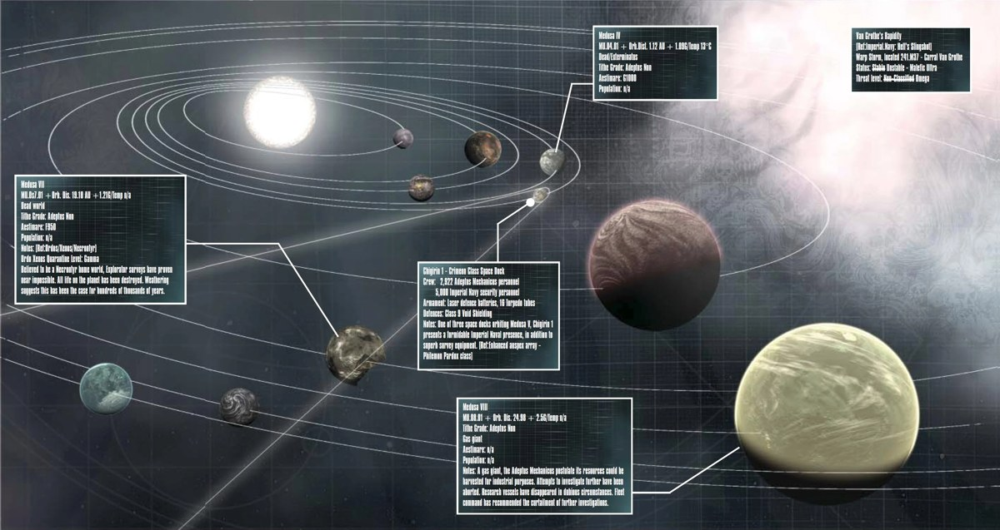

Medusa
| Medusa | |
|---|---|
| Medusa IV, homeworld of the Iron Hands | |
 Medusa and the ruined ring-station Telstarax, from a Mechanicus orbital record | |
| System | Sthenelus System, fourth planet |
| Sector | Thule Sector |
| Segmentum | Segmentum Obscurus |
| Classification | Chapter world; Feral world; waste world (unofficially a death world) |
| Ruler | The Iron Council of the Iron Hands |
| Population | c. 500,000 |
| Capital | None; the Chapter's seat is the Iron Hands' fortress and orbital forges |
| Tithe grade | Aptus Non (exempt) |
| Notable features | The Telstarax; Karaashi, the Ice Pinnacle; the Land Behemoths; the Gorgon's Forge |
Medusa, formally Medusa IV, is the homeworld of the Iron Hands and of their primarch Ferrus Manus. It is a cold, dark and geologically unstable planet several times the size of Terra, the fourth world of the Sthenelus System in the Thule Sector of the Segmentum Obscurus, not far from the Eye of Terror. Its people are nomadic clans who live in great armoured land-crawlers, and the Iron Hands recruit from among them.[1][2]
In the Dark Age of Technology Medusa was a rich mining world, ringed by an orbital station called the Telstarax. Its wealth was exhausted and its civilisation destroyed in the Age of Strife. Ferrus Manus grew up among its clans and made them strong before the Emperor arrived. Since the Heresy, Medusa has been ruled by the Iron Council, and it remains one of the most closed worlds of the Imperium.[2][3]
History
[edit]The Medusan Inheritance
[edit]According to ancient Mechanicus lore, Medusa IV was a world of great importance in the Dark Age of Technology. Its depths were mined for rare minerals by tireless machines, and a vast ring-station, the Telstarax, girdled the planet and lifted its riches into orbit by tethers. The world was guarded by automated defences against rival species. When the Age of Strife came, Mars and Terra remembered it as a legend of wealth.[2][4]
The human population of Medusa appears to descend from several waves of survivors: colonists of the Dark Age, the crews of wrecked starships, and sleeper ships sent by the Mechanicum during the Age of Strife to find the fabled world. Faced with a hostile planet, they declined into nomadic clans. They kept a corrupted version of the Mechanicus faith and a great deal of mechanical and weapon-making lore, but little else of civilisation, and they waged constant war on one another.[2]
Ferrus Manus
[edit]The capsule carrying the infant Ferrus Manus struck Karaashi, the Ice Pinnacle, the highest mountain on Medusa, with such force that the Medusans said many of their mountains shook themselves to pieces. Years later he came out of the northern wastes fully grown. The clans' legends tell of his feats of strength, including the lifting of a mountain range to humble a storm giant. He did not take sides in the clans' wars, which he believed made them strong, and was adopted by all of them.[3][2]
The Canticle of the Travels, a Medusan epic, tells of his fight with Asirnoth, the Great Silver Wyrm, a beast with a hide of living metal, in the Land of Shadows, a region of giant metal ruins. Ferrus drowned the Wyrm in a river of lava, and when he drew out his arms they were covered in the creature's metal, which did not burn and could shape steel without a forge. Imperial scholars have suggested that the Land of Shadows was a Necron tomb and that Asirnoth was a construct of necrodermis.[2][a]
Ferrus taught the clans to make tools and machines they had never known, and they grew stronger and more prosperous than ever before.[2]
The Emperor and the Legion
[edit]
When the Emperor's ship came down on Medusa in the late 30th millennium, Ferrus went alone to meet it. The Medusan tradition is that the two fought for a day and a night, and that the contest ended when Ferrus yielded and swore loyalty. Ferrus took command of the X Legion, which made Medusa its home. Its Terran-born chapters were replaced by clans recruited from Medusa, and the Space Marines displaced the clans' traditional rulers.[3][2]
During the Great Crusade, worlds conquered by the Iron Hands paid a tithe of strong boys, who were sent to Medusa to be tested on its surface. Before the Heresy, Ferrus and his brother Fulgrim held a contest of forging, each making a weapon for the other; Fulgrim's hammer, Forgebreaker, became Ferrus's weapon, and Ferrus's sword, the Fireblade, became Fulgrim's.[3]
The Horus Heresy
[edit]Ferrus Manus was killed by Fulgrim at the Drop Site Massacre on Isstvan V in 006.M31, and his head was taken. The Legion lost most of its strength in the massacre. On Medusa the clans and the surviving Iron Fathers continued the war under the Iron Council, and the Legion fought a long war of vengeance against the traitors. Its grief for the primarch, and its belief that his death came from the weakness of the flesh, shaped its later doctrine.[5]
From M31 to M41
[edit]After the Second Founding, the Iron Hands Chapter kept Medusa as its homeworld and the clan structure of the Legion as its company organisation. Medusa remained closed to outsiders, and the Iron Council governed it as part of the Chapter's domain. In M35 the Moirae Schism among the Adeptus Mechanicus divided the Iron Hands; several clans were excommunicated and Medusa's ties with Mars were strained for generations.[2][4]
The Era Indomitus
[edit]The Great Rift opened close to Medusa, and the Iron Hands found themselves at war on many fronts. The Iron Council accepted Primaris Space Marines into the clans after debate, many of the new warriors receiving augmetics to bring them into line with the Chapter's practice. Medusa has remained in Imperial hands, and its clans continue to send aspirants to the Chapter.[6]
Geography
[edit]
Medusa is a dark world of perpetual gloom, its sky choked with dust and pollution through which the sun rarely shows. Its surface is a land of frozen mountain ranges, ice fields, tundra, volcanoes and boiling geysers. Its crust is unstable, and mountains and seas rise and vanish within a season. The land is scarred by craters and by the remains of the Telstarax that fell from orbit, and beneath it lie the exhausted mine workings of the Dark Age. Native life is scarce.[2]
The ruins of the Telstarax still circle the planet, and its debris, ancient mines and automated weapons make the system dangerous to approach. The Iron Hands maintain fleet bases, forges and defences among the debris, and the region is subject to magnetic and aetheric disturbances that hinder navigation.[2]
Society
[edit]The people of Medusa live in clans. The largest clans dwell in Land Behemoths, huge fortified crawlers built partly from ancient patterns for mining and harvesting engines, which travel across the shifting land and from which the clans send out raiding and foraging parties. Medusan society is harsh and martial, and only the strong prosper in it. The clans speak a dialect of Low Gothic with much of the old Mechanicus cant in it, and their faith mingles the Machine God with the memory of Ferrus Manus.[2]
The Iron Hands companies are called clans and take the names of Medusan clans, among them Garrsak, Raukaan, Borrgos and Haarmek. Each company recruits from its own clans. The Iron Council, made up of the Iron Fathers and the clan commanders, governs both the Chapter and the planet, and the Chapter has never had a single Chapter Master in the conventional sense. Medusan aspirants are tested by survival in the wastes, and those who join the Chapter learn to regard the flesh as weak and to replace it with metal as they rise in rank.[2][3]
See also
[edit]Notes
[edit]- ^ The legend of the metal hands is older than the Canticle, but the Canticle is the only source that explains their origin. Mechanicus and Inquisitorial scholars treat the Necron identification as a hypothesis.
References
[edit]- ^ Codex Imperialis (rev. 980.M41). Adeptus Terra.
- ^ a b c d e f g h i j k l m Book of the Iron Council (restricted). Iron Hands, Medusa.
- ^ a b c d e Liber Primarchus (M32, revised M41). Administratum Archive, Terra.
- ^ a b Liber Martis: Chronicles of the Red Planet (rev. M41). Temple of All Knowledge, Mars.
- ^ Chronicles of the Heresy (sealed). Logos Historica Verita, Terra.
- ^ Records of the Indomitus Crusade (ongoing). Office of the Lord Commander.